System Architecture
Systems Architecture · Chapter 6
From Form and Function to Architecture
- Chapter 4 gave us form — the elements and structure of what a system is
- Chapter 5 gave us function — the processes and operands of what a system does
- This chapter is the synthesis: system architecture, the mapping between form and function
Tip
Chapter 7 adds the last piece — concept — completing the full definition of architecture.
Box 6.1 · Definition: System Architecture
System architecture is the embodiment of concept, the allocation of physical/informational function to the elements of form, and the definition of relationships among the elements and with the surrounding context.
- Five key terms: function, form, relationship, context (Ch. 2–5), and concept — a mental image or system vision that maps form and function (Ch. 7)
- Architecture is not an independent system attribute — it is the mapping between form and function
Figure 6.1 · Architecture as Combination
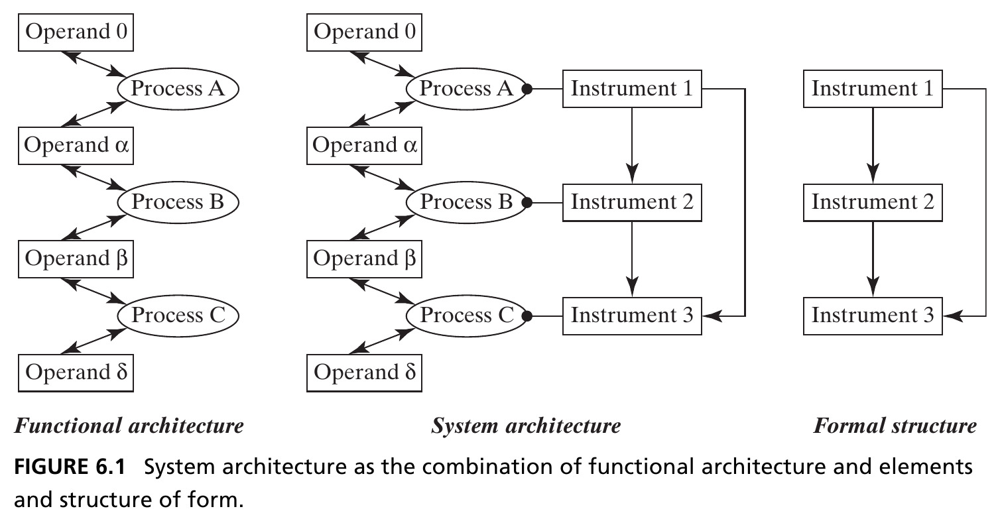
Functional architecture (left) + formal structure (right) combine into system architecture (center): each process is now linked to the instrument object that executes it. Source: Crawley, Cameron & Selva (2016), Fig. 6.1.
Box 6.2 · Principle of Value and Architecture
“Design is not just what it looks like and feels like. Design is how it works.” — Steve Jobs
“Form and function should be one, joined in a spiritual union.” — Frank Lloyd Wright
Value is benefit at cost. Architecture is function enabled by form — benefit is delivered by function, cost is associated with form. Good architectures (desired function for minimal form) are nearly synonymous with the delivery of value.
6.2 System Architecture: Form and Function
Mapping of Form and Function
How would we describe the architectural difference between two bridges with the same external function (carrying vehicles) and similar form (towers, roadbed, cables)?
Tip
The roadbed of a cable-stay bridge carries load in compression; a suspension bridge’s roadbed does not. The suspension bridge’s anchors react to cable loads directly — letting it span much farther.
Figure 6.2 · Two Bridges, Two Architectures
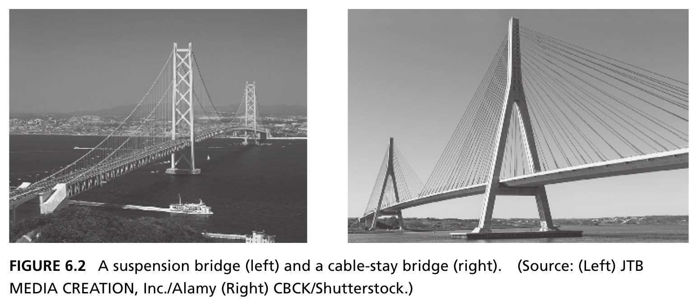
A suspension bridge (left) and a cable-stay bridge (right) — same function, similar form, different architecture. Source: Crawley, Cameron & Selva (2016), Fig. 6.2. Photos: (left) JTB Media Creation/Alamy, (right) CBCK/Shutterstock.
Table 6.1 · Questions for Defining Architecture
| Question | Produces |
|---|---|
| 6a. How are instruments mapped to internal processes? | The idealized architecture |
| 6b. What non-idealities require added operands/processes/instruments? | The realistic architecture |
| 6c. What supporting functions and instruments support the value path? | Layers near the value pathway |
| 6d. What are the interfaces at the system boundaries? | Formal/functional interface definitions |
| 6e–g. What is the execution sequence? Parallel threads? Timing? | A sequence diagram; timing constraints |
Question 6a is the crux of Part 2 — and of this entire text.
The Simplest Case: One-to-One Flow-Through
- The center diagram of Figure 6.1 is the simplest, most commonly assumed architecture: one instrument per process, one process per instrument
- Each process produces a distinct operand — function reduces to “produce + outgoing operand”
- This is the independence axiom [Suh, 1998]. If only life were so simple!
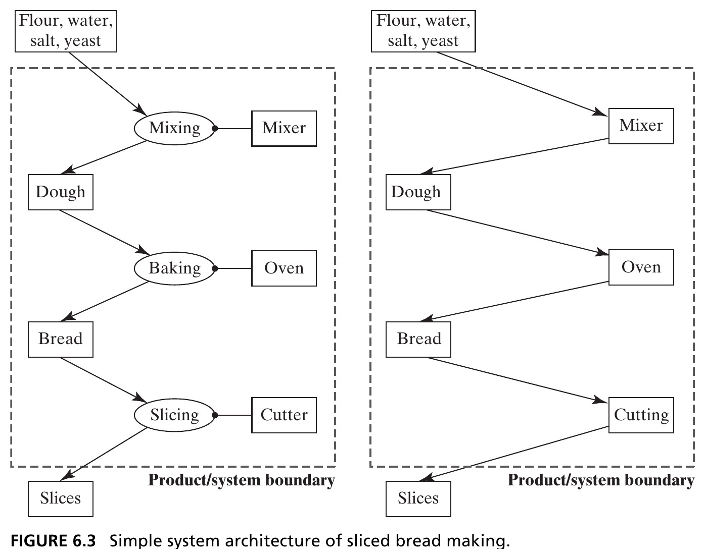
Figure 6.3 · Simple Architecture of Bread Slicing
- Left: mixer → mixing, oven → baking, cutter → slicing — a clean one-to-one map
- Right: the mental shortcut this enables — form becomes a proxy for process. Dough “goes into” an oven; bread “emerges.” Suppress the processes and reason directly in terms of form
- Works — but is it generalizable?
Figure 6.4 · A Not-So-Simple Architecture
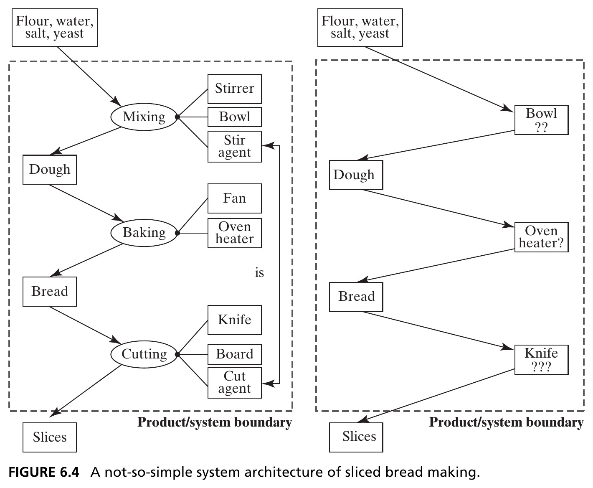
“Mixer” replaced by stirrer + bowl + stir agent (the cook) — one instrument (the cook) now maps to two processes. The proxy shortcut on the right breaks down: what does it mean to go “into” a bowl or a knife? Source: Crawley, Cameron & Selva (2016), Fig. 6.4.
Two Special Cases Worth Naming
No instrument shown
Ice melting into water — is there really no instrument? Every process needs something enabling it; when none appears, ask what really is the enabler.
The operand is the instrument
A person walking: “people walk themselves.” An operand that exists prior to the process can double as its own instrument — form and operand objects are not mutually exclusive.
Figure 6.5 · Fragments of Simple Architectures
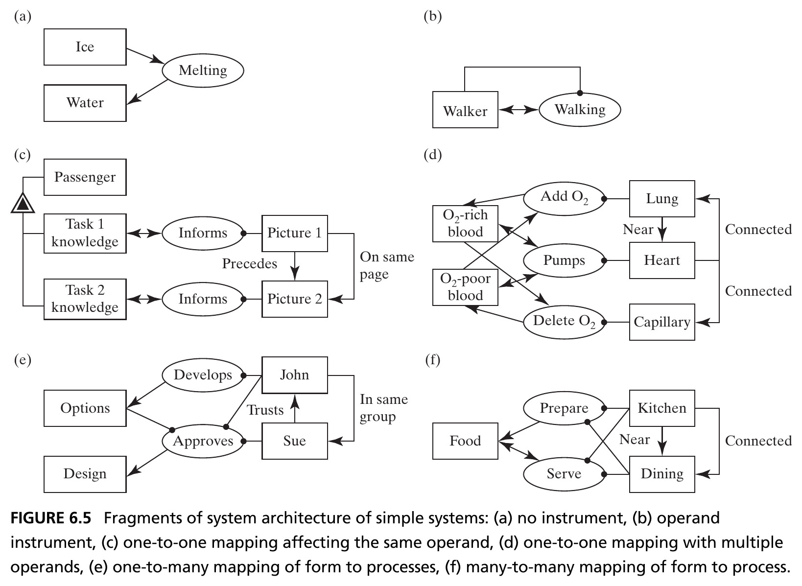
Left to right, top to bottom: (a) no instrument, (b) operand-as-instrument, (c) one-to-one affecting the same operand (emergency card), (d) one-to-one with multiple operands (circulatory system), (e) one-to-many form-to-process (Team X’s John), (f) many-to-many (kitchen/dining). Source: Crawley, Cameron & Selva (2016), Fig. 6.5.
What These Fragments Teach
- (c) Passenger safety card: each picture informs a distinct task-knowledge state — one-to-one mapping, but the operands are coupled (attributes of the same passenger)
- (d) Circulatory system: heart/lung/capillary map one-to-one to processes, but on the operand side, pumping affects both oxygen-rich and oxygen-poor blood
- (e)–(f) John is instrument to two processes; kitchen and dining each support both preparing and serving — many-to-many mapping is a very common occurrence, and it demands real attention from the architect
Figure 6.8 · The Pump’s Idealized Architecture
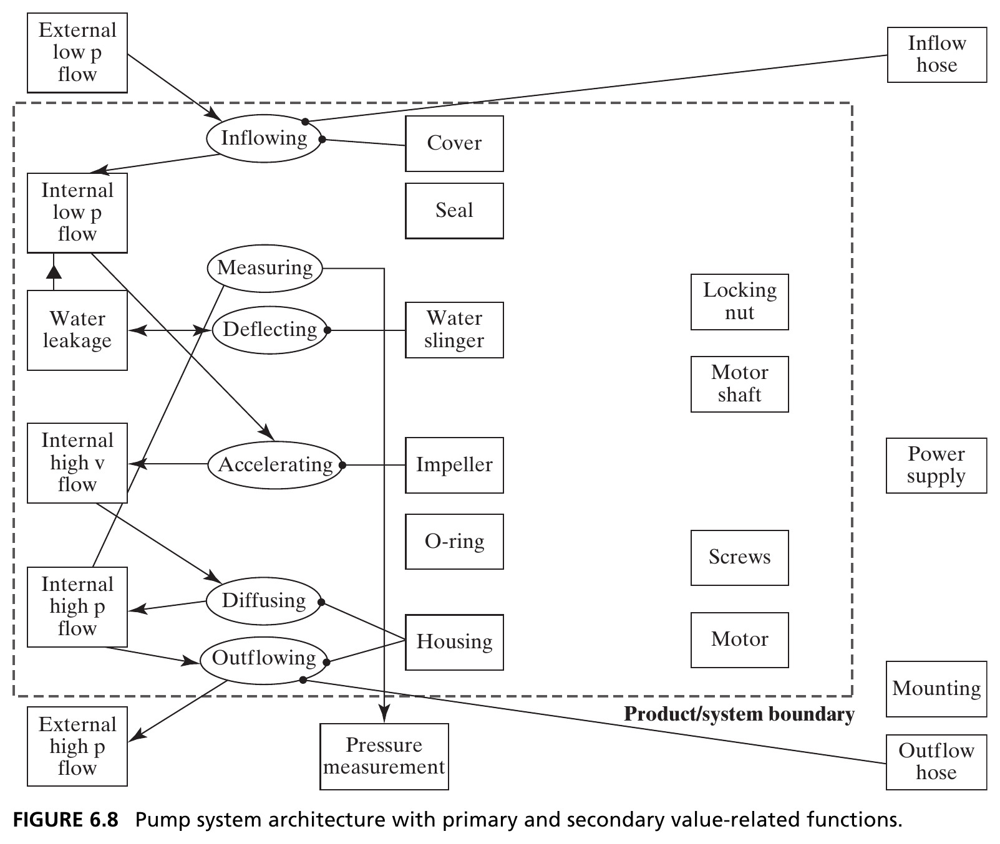
Cover, impeller, and housing map (nearly) one-to-one onto inflowing/accelerating/diffusing/outflowing — the primary value pathway — plus the secondary functions of measuring and deflecting. Many instruments (seal, O-ring, motor, screws…) are still unassigned. Source: Crawley, Cameron & Selva (2016), Fig. 6.8.
Figure 6.9 · Bubblesort’s Architecture
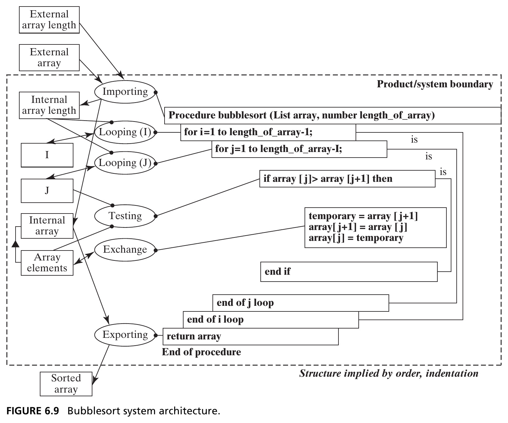
Importing, looping, testing, and exporting each map to a single line of code; the exchanging process spans three lines. The emergence of sorting is clear: the if creates conditional exchange, the two for loops add the sweep that produces the sorted result. Source: Crawley, Cameron & Selva (2016), Fig. 6.9.
Section 6.2 Summary
- The system architecture consists of instrument objects mapped onto internal processes; processes interact through shared or exchanged operands
- The mapping can be one-to-one (the simple, assumed case), many-to-one, or one instrument to many processes — an operand existing prior to a process can even act as its own instrument
- Structure supports emergence: connections enable functional interaction directly; location/placement and intangible relationships (Ch. 4) inform and influence it
- Structure also informs performance — how well the system executes its functions
6.3 Non-idealities, Supporting Layers, and Interfaces
Non-idealities in System Architecture
- Looking back at Figure 6.8: the seal, O-ring, motor, motor shaft, screws, locking nut, and power supply are not yet associated with any process
- These exist because the idealized value pathway is not sufficient — real systems must also manage the operands: containing them, moving them, storing them, protecting against uncertainty
- The seal and O-ring are “close to” the value pathway (they touch the water) but exist purely to contain it, not to move it toward the value-related state
Tip
Bubblesort, being a deterministic digital system, has no non-idealities in Figure 6.9 — though a real run-time implementation would need instructions for moving and storing data.
Supporting Functions and Layers in Architecture
- Objects on the value pathway (impeller, cover) must themselves be supported — against gravity, applied loads, and must be powered and controlled
- A classic case: networked information systems. All value is created in the application layer (OSI 7-layer / Internet 4-layer models) — every layer below is purely supporting
- General pattern: value operands → value processes → value instruments, then alternating layers of supporting processes and instruments (mechanical, energetic, informatic support)
Figure 6.10 · The Pump, Fully Layered
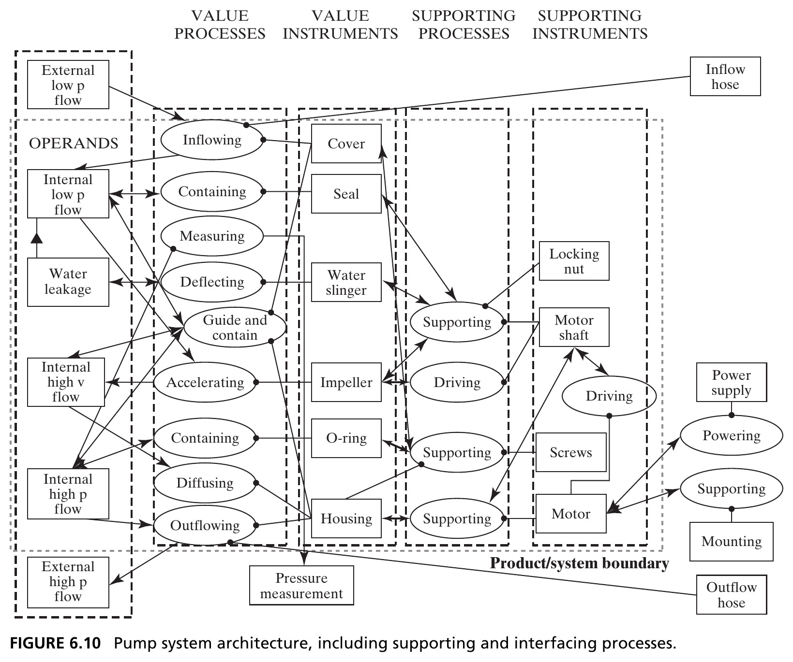
Value processes/instruments (left) plus supporting processes/instruments (right): the motor drives the shaft but also supports it; the housing (a value instrument) also supports the cover and O-ring. Assignment to a column is not unique — but instruments should sit as close to the value pathway as possible. Source: Crawley, Cameron & Selva (2016), Fig. 6.10.
System Interfaces in Form and Function
- Boundaries are central to defining a system (Ch. 2) — the system interface is where something is passed into or out of the system, at a boundary crossing
- For the pump, Figure 6.10 shows five: inflowing fluid, outflowing fluid, external powering, external supporting, and pressure measurement leaving the system
It is the architect’s obligation to specify interfaces — by citing a standard, or writing an interface control document.
Figure 6.11 · Model of an Interface
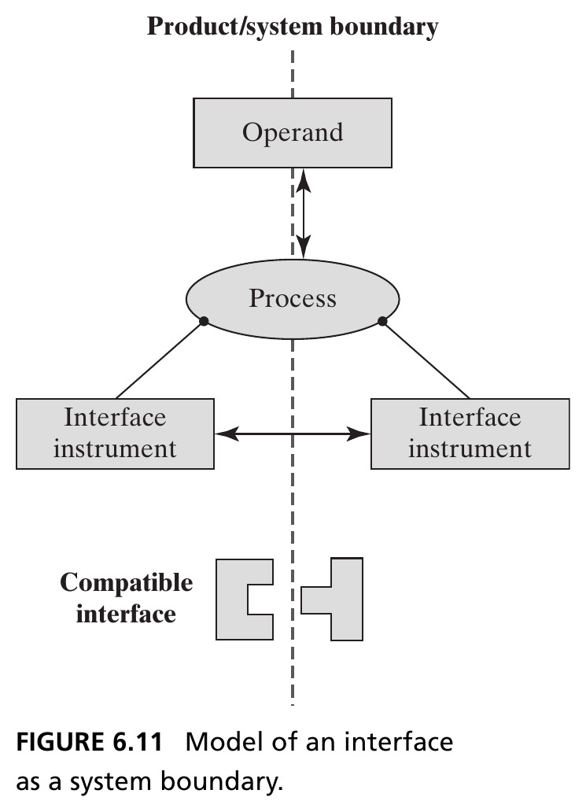
An interface has both form and function: the shared operand, the shared process, and two interface instruments — either androgynous (identical on both sides) or compatible (different, but fitting together). Source: Crawley, Cameron & Selva (2016), Fig. 6.11.
Figure 6.12 · Four Interfaces of the Pump
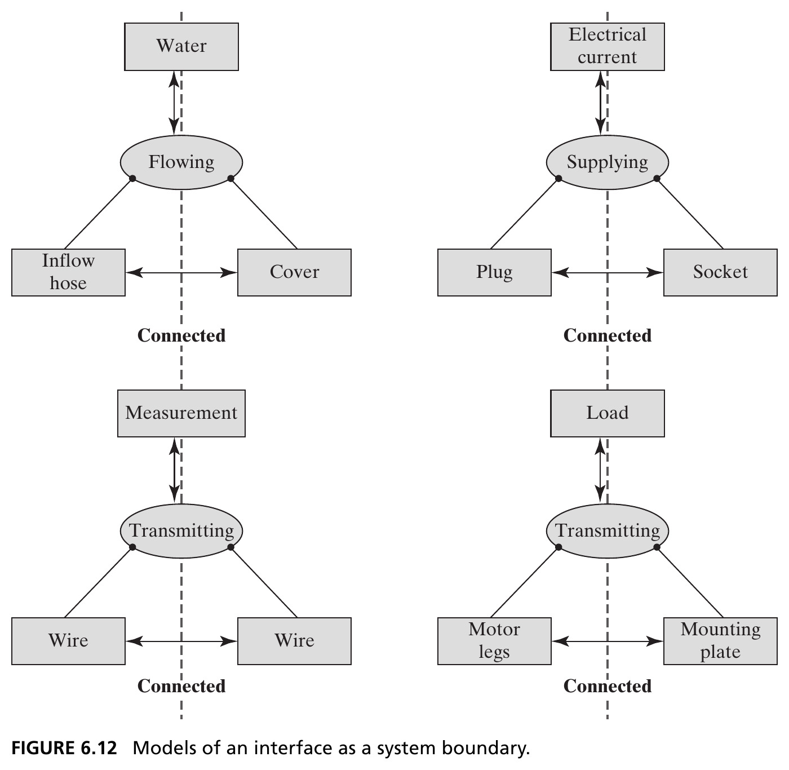
Flowing (hose ↔︎ cover), supplying (plug ↔︎ socket), transmitting-measurement (wire ↔︎ wire), transmitting-load (motor legs ↔︎ mounting plate) — each pair of interface instruments is connected. Source: Crawley, Cameron & Selva (2016), Fig. 6.12.
Section 6.3 Summary
- Even though there is nominally an idealized value delivery pathway, non-idealities must be accommodated — usually associated with containing, moving, or storing operands
- Architecture can be represented in layers: value operands/processes/instruments, then one or two layers of supporting processes and instruments
- Interfaces have form and function too — at minimum, specify the shared operand, the shared process, and the compatible instruments on each side of the boundary
6.4 Operational Behavior
The Operator
- Function describes what a system can do; operational behavior is what actually happens when it runs, over time and in sequence
- Every system has an operator — sometimes essential to operation (riding a bike), sometimes merely supervisory (changing a TV channel)
- The pump and bubblesort aren’t rich examples of operator interaction — someone starts the pump, someone calls bubblesort, but that’s it
Figure 6.13 · The Butterfly Corkscrew
- A richer example: the two-levered (“butterfly”) corkscrew
- The operator is essential: places the device on the bottle, twists the handle, pushes down the levers, removes the cork
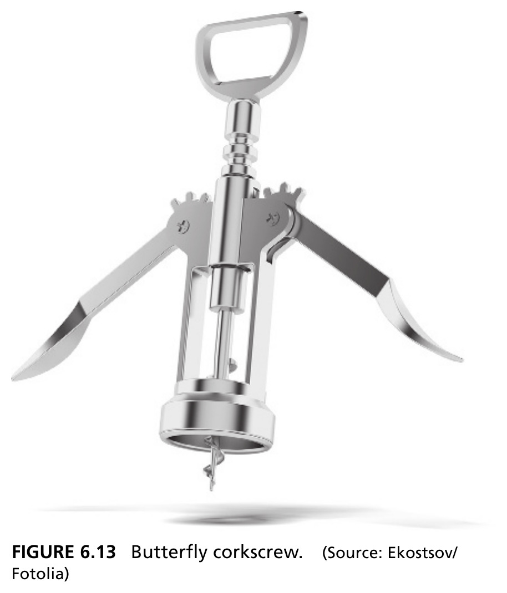
Behavior: Sequence vs. Timing
Behavior is the sequence of functions (and associated state changes) a system executes to deliver value.
- The operations sequence: the total progression of actions — including overlaps, and whether ordering is required, uncertain, or optional
- Dynamic behavior (timing) is different: specific reference to clock time — start-up transients, latency, deadlines (e.g., a car’s brakes must deploy within milliseconds of pedal movement)
Figure 6.14 · Corkscrew Operations Sequence
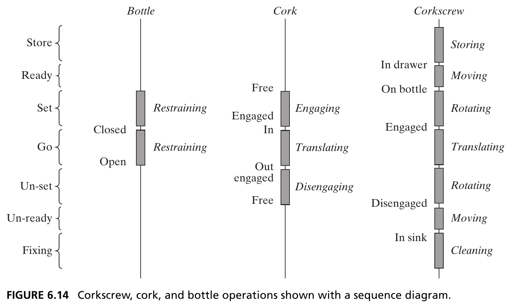
A sequence-line diagram: states to the left, processes to the right. The corkscrew itself cycles from storage through use and back to cleaning — the full operational lifecycle (Ch. 8). Source: Crawley, Cameron & Selva (2016), Fig. 6.14.
Operations Cost
- Operational behavior, concept (Ch. 7), and system details (Ch. 8) all drive operations cost — typically expressed per event, per day, or per unit usage
- Built from direct costs (operator, other personnel, consumables) and indirect costs (maintenance, upgrades, insurance)
Tip
The architect must weigh operational cost carefully — it’s a major factor in a product/system’s long-term competitiveness.
Section 6.4 Summary
- Every system has an operator — closely involved or merely supervisory — and the operator interface is a key part of the architecture
- Behavior is the sequence of functions necessary for value to emerge — including execution order and associated state changes
- Dynamic behavior specifically references clock time; operations cost (direct + indirect) is a key driver of long-term competitiveness
6.5 Reasoning about Architecture Using Representations
Simplified System Representation
- The full representation (Figure 6.10) can be too much detail for many purposes
- Three approaches to simplify: abstract (hide detail inside larger-scale objects), omit (leave out low-priority detail), or project (discussed next)
- Guiding principle: preserve the value pathway, simplify elsewhere (Principle of Focus, Box 2.6)
Figure 6.15 · Simplified Pump Architecture
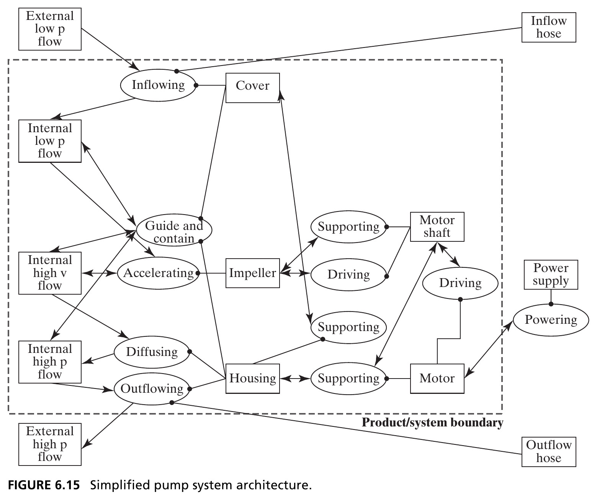
Compare with Figure 6.10: the value pathway is fully preserved; the motor shaft’s dual role (supporting and driving the impeller) stands out more clearly. Source: Crawley, Cameron & Selva (2016), Fig. 6.15.
Table 6.2 · The Architecture as an Array
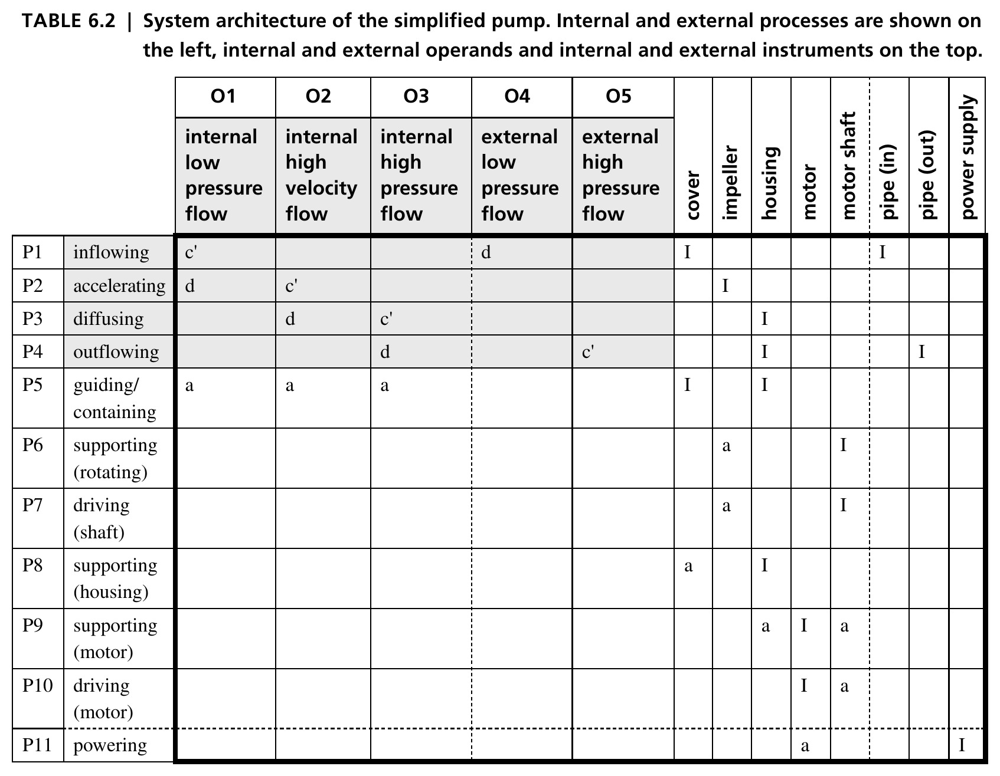
The process-form (PF) array: rows are processes, columns are operands (O1–O5) and instruments. c′ = produce, d = consume, a = affect, I = instrument-of. Contains exactly the same information as Figure 6.15 — just tabulated. Source: Crawley, Cameron & Selva (2016), Table 6.2.
The Design Structure Matrix, Generalized
- Box 5.11 defined PP, PO, OP, OO (relationships among processes and operands); this chapter adds PF (process↔︎form) and, by analogy, FP
- FF is generally a diagonal — just an identifier for each element of form (it does not duplicate the structural connections of Ch. 4)
- OF and FO are generally zero: operands rarely connect directly to form — there’s always an intervening process
Tip
Graphical views (Figures) are easier to develop and visualize; matrix views (Tables) scale better and are easier to compute on. We use both throughout.
Projection onto Objects
- Projection: show operands and instruments explicitly as objects; processes become the links between them
- Advantage: to most viewers, objects feel more concrete than processes — but it requires understanding the (sometimes unfamiliar) idea of an operand object
Figure 6.16 · Projection onto Objects (Bread)
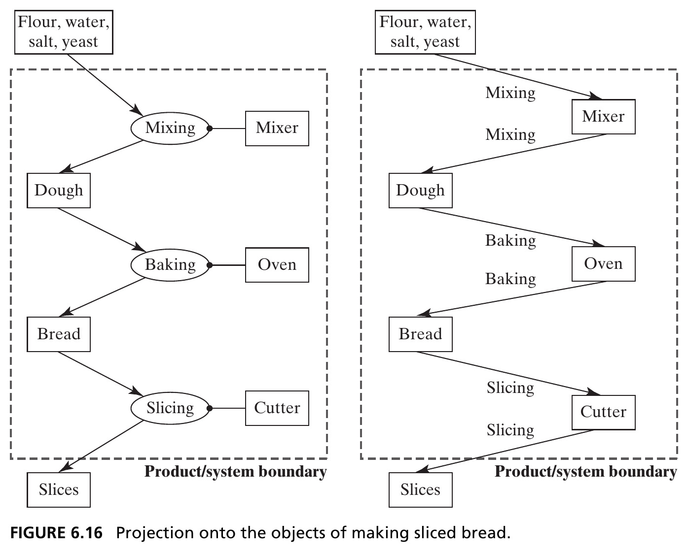
Left: the full OPM view. Right: projected onto objects — flour/dough/bread/slices connect directly to mixer/oven/cutter, labeled by the process that links them. Source: Crawley, Cameron & Selva (2016), Fig. 6.16.
Figure 6.18 · Pump Value Stream, Projected onto Objects
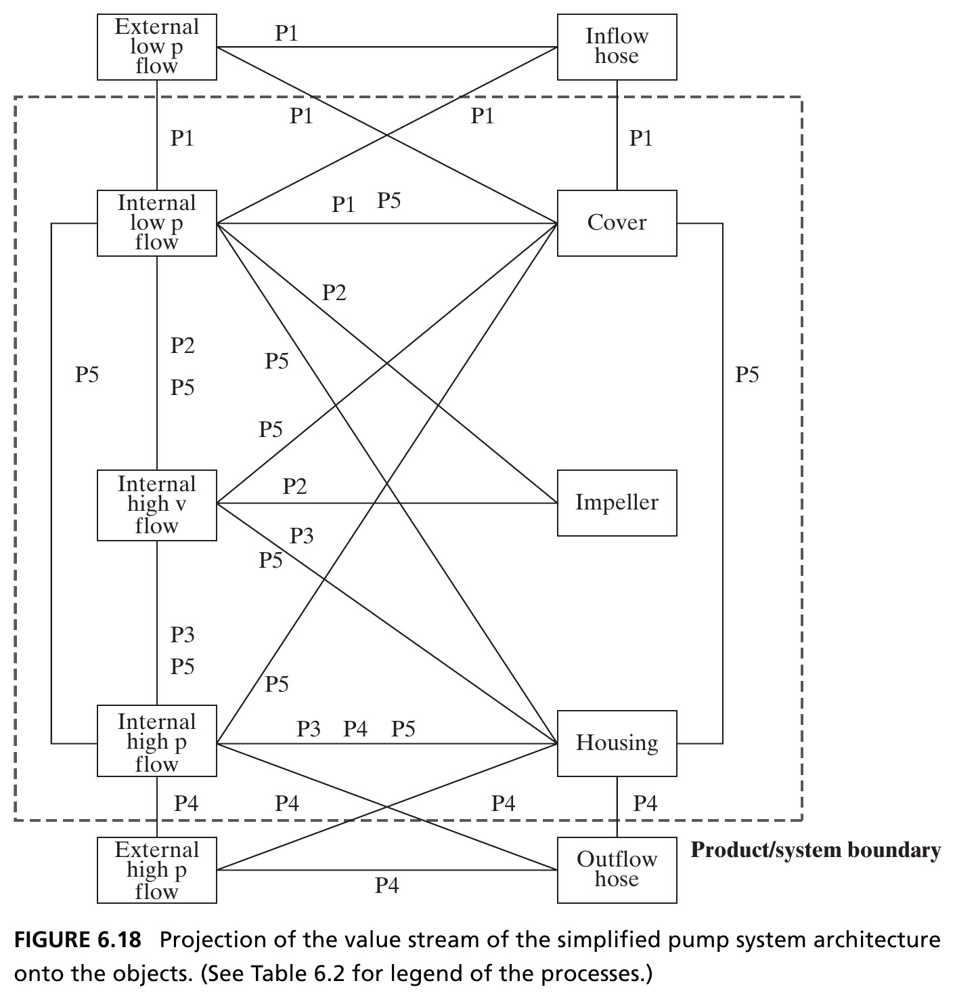
Every operand-instrument pair from Table 6.2’s value-related rows (P1–P5), redrawn as a direct link labeled by the connecting process. Source: Crawley, Cameron & Selva (2016), Fig. 6.18.
Projection onto Form
- A second projection: onto just the objects of form, the most tangible and concrete elements
- Links between form objects now encode three things at once: the preceding process, the connecting operand, and the following process
- Produces the most compact representation — understandable by nearly anyone, but with a lot of information compressed into each link
Figure 6.19 · Projection onto Form (Bread)
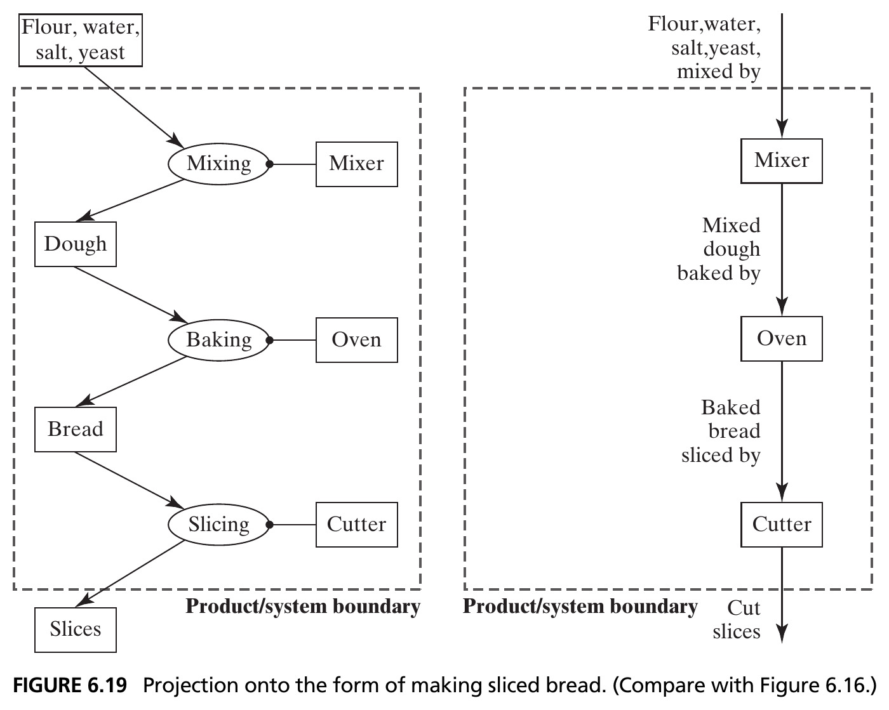
Compare with Figure 6.16: now mixer → oven → cutter are linked directly, each arrow labeled with what flows and what happens (“mixed dough, baked by…”). Source: Crawley, Cameron & Selva (2016), Fig. 6.19.
Figure 6.21 · Pump Value Stream, Projected onto Form
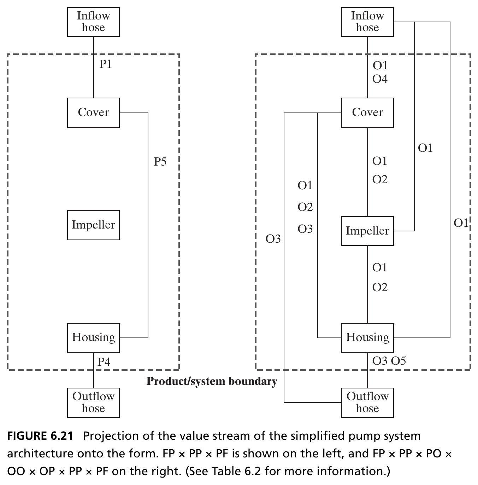
Left: form-to-form links only (FP × PP × PF). Right: the fuller projection that also threads through the operands (FP × PP × PO × OO × OP × PP × PF) — the same N-squared DSM structure from Table 6.3, applied to this example. Source: Crawley, Cameron & Selva (2016), Fig. 6.21.
Table 6.4 · Classes of Operand Interactions
| Category | Subtype | Example interaction |
|---|---|---|
| Matter | Mechanical | Mass exchange, force/momentum |
| Biochemical | Chemical reaction, biological replication | |
| Energy | — | Work, thermal (heating) |
| Information | Signal | Data transfer, command/trigger |
| Thought | Exchanging ideas, imparting beliefs |
Tip
A useful checklist when identifying what, exactly, an operand link represents.
Section 6.5 Summary
- The full architecture representation (operands, processes, form) is complete but can be complex — abstraction, omission, and projection all help
- Projection onto objects keeps operands and instruments explicit and concrete, with processes as links — good for those less familiar with the model
- Projection onto form is the most compact representation, understandable by nearly anyone — but stores much more information per link
Chapter 6 Summary
- System architecture is not an independent attribute — it’s the mapping between form and function, informed by structure
- The idealized value pathway rarely tells the whole story: non-idealities, supporting layers, and interfaces round out a realistic architecture
- Operational behavior — the operator, sequence, timing, and cost — describes what actually happens when a system runs
- Architecture can be represented at different levels of abstraction: full OPM/DSM, simplified, or projected onto objects or form
Tip
Still missing from our definition of architecture (Box 6.1): concept — the mental image that maps form and function. That’s Chapter 7.
Next: Solution-Neutral Function and Concepts
Chapter 7 asks: before committing to this architecture, what is the space of possible concepts that could deliver the same function?
Tip
Reference: Crawley, E., Cameron, B., & Selva, D. (2016). System Architecture: Strategy and Product Development for Complex Systems. Pearson. Chapter 6.

← Course Home · Systems Architecture · Chapter 6